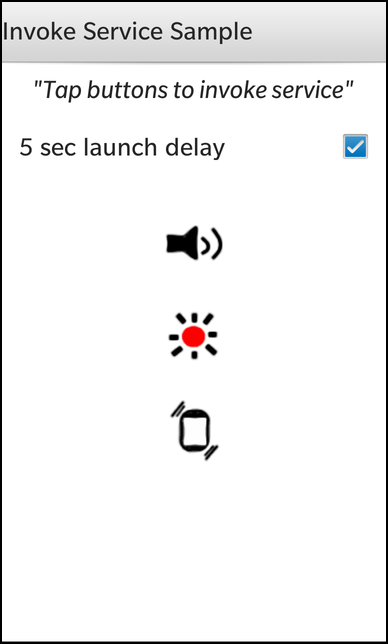

Files:
The Invocable Service example demonstrates how to create, register a invocable service and how to call into that service using the invokation framework to trigger desired service functionality.

In this example we'll learn how to create a service and how to invoke the service functionality through the invocation framework.
The service business logic is implemented in the C++ class Service, whereas, the invocation logic is located in the the AppUI class.
The UI of this sample application consists of one page. This page allows the user to configure a 5 sec delay from the time the invocation request is received by the service to the time it executes that request. This page also has the 3 image buttons which represent the different functionalities you can request the service to perform.
The UI is written entirely in QML.
Page { titleBar: TitleBar { title: qsTr("Invoke Service Sample") } Container { topPadding: 20 Label { horizontalAlignment: HorizontalAlignment.Center text: qsTr("\"Tap buttons to invoke service\"") textStyle { fontStyle: FontStyle.Italic fontSize: FontSize.XLarge } } CheckBox { horizontalAlignment: HorizontalAlignment.Center preferredWidth: 700 topMargin: 50 text: qsTr("5 sec launch delay") onCheckedChanged: _app.handleCheckedChange(checked) } ImageButton { horizontalAlignment: HorizontalAlignment.Center topMargin: 100 defaultImageSource: "asset:///images/sound.png" onClicked: _app.sendSoundInvokeRequest() } ImageButton { horizontalAlignment: HorizontalAlignment.Center topMargin: 60 defaultImageSource: "asset:///images/led.png" onClicked: _app.sendLEDInvokeRequest() } ImageButton { horizontalAlignment: HorizontalAlignment.Center topMargin: 60 defaultImageSource: "asset:///images/vibrate.png" onClicked: _app.sendVibrateInvokeRequest() } Button { horizontalAlignment: HorizontalAlignment.Center text: "kill Service" onClicked: _app.killServiceRequest(); } } }
AppUI class encapsulates the UI creation content, dealing with configuration (i.e. delay), and creating/invoking the various requests.
Inside the constructor the page content creation is called and property values are initialized with default values.
AppUI::AppUI(QObject *parent) : QObject(parent) { qDebug() << "*AppUI called in AppUI.cpp"; // Launch the service m_service = new Service(this); // Disable sleep by default m_sleep = tr("NotSleep"); // Load the UI description from main.qml QmlDocument *qml = QmlDocument::create("asset:///main.qml").parent(this); qml->setContextProperty("_app", this); // Create the application scene AbstractPane *root = qml->createRootObject<AbstractPane>(); Application::instance()->setScene(root); }
Whenever the user triggers one of the image buttons the corresponding InvokeRequest is created and invoked using the InvokeManager class.
void AppUI::sendSoundInvokeRequest() { qDebug() << "*sendSoundInvokeRequest"; cout << "*sendSoundInvokeRequest" << endl; // Created request for sound invocation InvokeRequest request; request.setTarget("blackberry.sample.service.sound"); request.setAction("test.action.PLAY_SOUND"); request.setData(m_sleep.toAscii()); cout << "send request" << endl; // Start the invocation InvokeTargetReply *targetReply = m_invokeManager.invoke(request); if (targetReply == 0) { cout << "***request failed" << endl; } } void AppUI::sendLEDInvokeRequest() { qDebug() << "*sendLEDInvokeRequest called in AppUI.cpp"; cout << "*sendLEDInvokeRequest called in AppUI.cpp" << endl; // Created request for LED invocation InvokeRequest request; request.setTarget("blackberry.sample.service.led"); request.setAction("test.action.FLASH_LED"); request.setData(m_sleep.toAscii()); cout << "send request" << endl; // Start the invocation InvokeTargetReply *targetReply = m_invokeManager.invoke(request); if (targetReply == 0) { cout << "***request failed" << endl; } } void AppUI::sendVibrateInvokeRequest() { qDebug() << "*sendVibrateInvokeRequest called in AppUI.cpp"; cout << "*sendVibrateInvokeRequest called in AppUI.cpp" << endl; // Created request for vibration invocation InvokeRequest request; request.setTarget("blackberry.sample.service.vibrate"); request.setAction("test.action.VIBRATE"); request.setData(m_sleep.toAscii()); cout << "send request" << endl; // Start the invocation InvokeTargetReply *targetReply = m_invokeManager.invoke(request); if (targetReply == 0) { cout << "***request failed" << endl; } }
The sleep configuration toggles the sleep data which dictates a delay before the service executes the request.
void AppUI::handleCheckedChange(bool newCheckedState) { qDebug() << "*handleCheckedChange"; // Toggle the sleep state on checkbox state change if (newCheckedState) { qDebug() << "**checked"; m_sleep = "Sleep"; } else { m_sleep = "NotSleep"; } }
Service is the central class in this application. It provides all the functionality and executes them upon requests that it receives from the invocation framework.
In the constructor it initializes property values with their default values and establishes the connection to the invocation manager in order to listen to incoming requests, specific to this service.
Service::Service(QObject *parent) : QObject(parent) , m_invokeManager(new InvokeManager(this)) // Create strings to identify the invoke target id requested , m_soundString(QLatin1String("blackberry.sample.service.sound")) , m_ledString(QLatin1String("blackberry.sample.service.led")) , m_vibrateString(QLatin1String("blackberry.sample.service.vibrate")) , m_killString(QLatin1String("blackberry.sample.service.exit")) // Default sleep delay , m_delay(5) { // Wait to receive signal of invokeRequest from invokeManager, and call checkTargetAction when signal received connect(m_invokeManager, SIGNAL(invoked(const bb::system::InvokeRequest&)), this, SLOT(checkTargetAction(const bb::system::InvokeRequest&))); }
The following method verifies the correct target request, and mathes the request with its specific service function. It also access' the request's data to enable/disable the delay to function execution.
void Service::checkTargetAction(const bb::system::InvokeRequest& request) { qDebug() << "*checkTarget called in Service.cpp, action is " << request.target(); cout << "*checkTarget called in Service.cpp, action is " << request.target().toStdString() << endl; // get target attribute from request const QString reqTarget = request.target(); if (!reqTarget.startsWith("blackberry.sample.service")) { cout << "invalid entry target: " << reqTarget.toStdString() << endl; return; } // get data attribute from request const QString sleepData(request.data()); bool sleep = false; // debug: print array sleepData qDebug() << "**sleepData: " << sleepData; cout << endl << "**sleepData: " << sleepData.toStdString() << endl; if ("Sleep" == sleepData) { sleep = true; } // Invoke functions according to requested target if (reqTarget == m_soundString) { qDebug() << "**playSound service invoked"; cout << "**play sound service invoked" << endl; // Trigger the sound playSound(sleep); } else if (reqTarget == m_ledString) { qDebug() << "**flashLED service invoked"; cout << "**flashLED service invoked" << endl; // Trigger the LED flashLED(sleep); } else if (reqTarget == m_vibrateString) { qDebug() << "**vibrate service invoked"; cout << "**vibrate service invoked" << endl; // Trigger the vibrate vibrate(sleep); } else if (reqTarget == m_killString) { qDebug() << "**kill service invoked"; cout << "**kill service invoked" << endl; bb::cascades::Application::exit(0); } }
These methods represent the various functions the service can execution upon invocation framework requests. Making use of the various functionality provided by the platform, from led, system sound to phone vibration control.
void Service::playSound(bool isSleep) { qDebug() << "*playSound called in Service.cpp"; cout << "*playSound called in Service.cpp" << endl; // Delay execution if requested if(isSleep) { cout << "**isSleep TRUE" << endl; sleep(m_delay); } // Play system sound SystemSound::play(SystemSound::CameraShutterEvent); } void Service::flashLED(bool isSleep) { qDebug() << "*flashLED called in Service.cpp"; cout << "*flashLED called in Service.cpp" << endl; // Delay execution if requested if(isSleep) { cout << "**isSleep TRUE" << endl; sleep(m_delay); } // Flash LED m_led.flash(); } void Service::vibrate(bool isSleep) { qDebug() << "*vibrate called in Service.cpp"; cout << "*vibrate called in Service.cpp" << endl; VibrationController vc; // Delay execution if requested if (isSleep) { cout << "**isSleep TRUE" << endl; sleep(m_delay); } // Vibrate phone with 80 intensity for 500 milliseconds vc.start(80,500); }